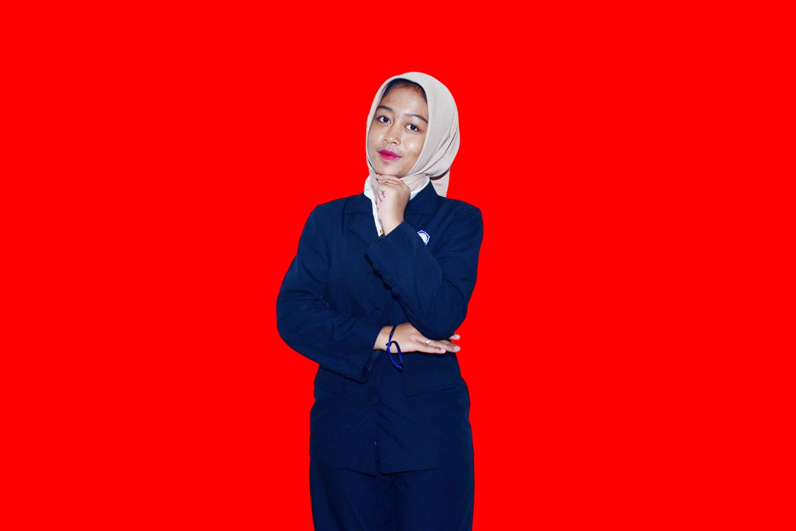
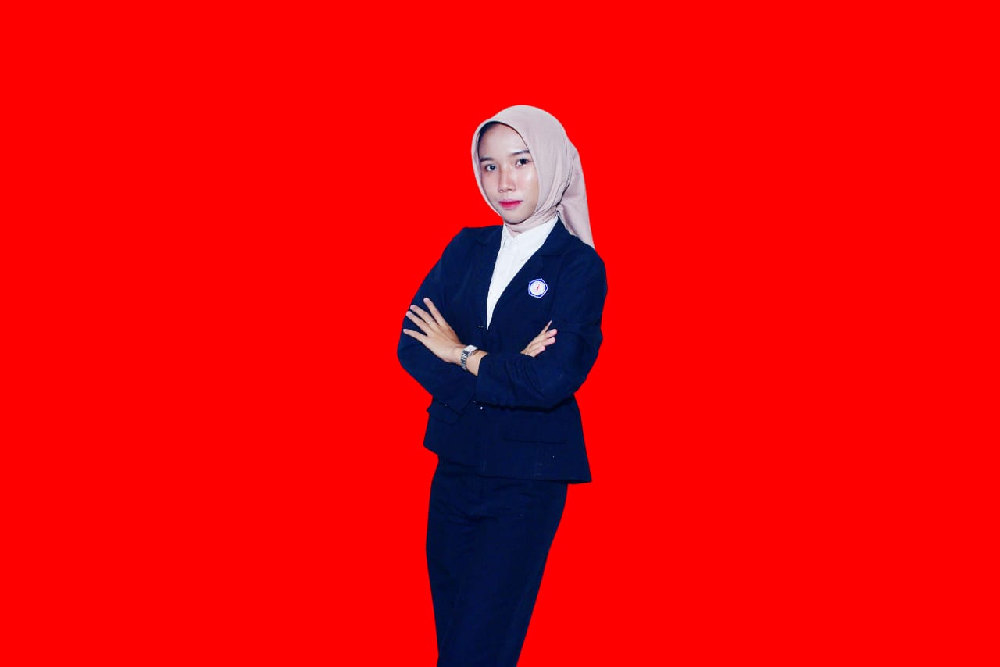
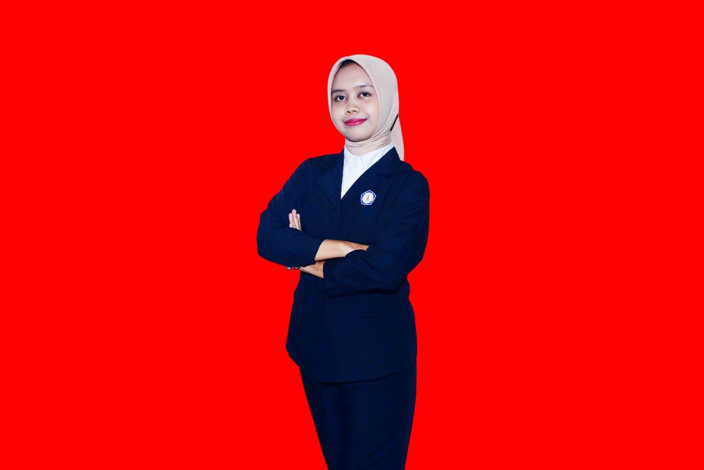
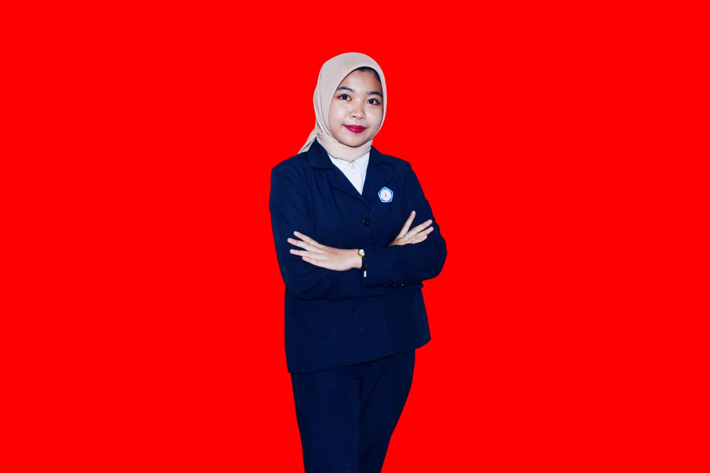

'Al yaa'Afiif Kurnia
Customer Service
Membantu pasien melakukan pendaftaran online
Menjawab pertanyaan dasar
Mengarahkan penggunaan fitur layanan.

Laula Kamal Cahyani
Admin Pelayanan Pasien
Mengelola jadwal konsultasi
Input data pasien
Mengatur antrean layanan online
Mengelola arsip digital

Muti'ah Nurul Hidayah
Petugas Rekam Medis
Menata dan menyimpan data rekam medis electronic
Memastikan data aman & rapi
Mengelola riwayat pemeriksaan pasien

Anisa Nindya vinda
Petugas Farmasi
Menyiapkan daftar obat
Memastikan ketersediaan obat
Menangani permintaan obat untuk pasien
M ihsan
IT Support
Mengelola sistem Puskesmas Online
Menangani gangguan teknis
Menjaga koneksi & server
Menangani update aplikasi